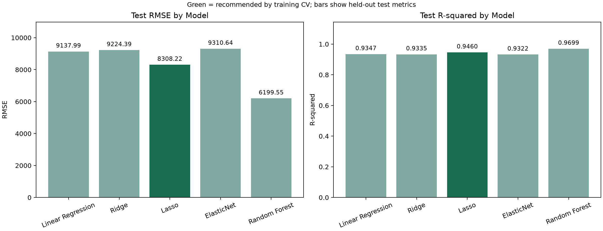
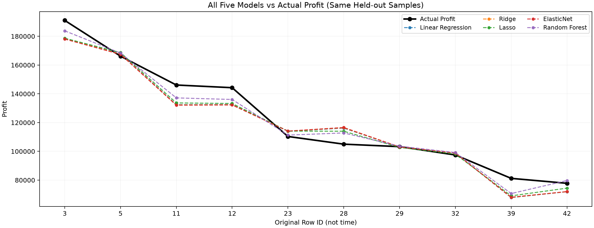

SCIKIT-LEARN · REGRESSION ANALYSIS
從創業支出，
看見利潤的線索。
用 50 家新創公司的資料，探索研發、行政、行銷與所在地如何影響利潤。
比較特徵組合，讓每一次預測都有數據依據。
等待訓練結果
MODEL BENCHMARK / 5 METHODS
五種模型整合比較
Linear Regression、Ridge、Lasso、ElasticNet、Random Forest；全部使用同樣五個編碼後特徵。推薦依據為訓練集 CV RMSE。

| 模型 | CV RMSE ↓ | Test RMSE ↓ | Test R² ↑ | Test MAE ↓ | CV 選出參數 |
|---|
模型、正則化強度與樹參數僅依訓練集五折交叉驗證決定；CV 分數用於選模，並非獨立泛化誤差。測試分數僅供評估。
01 / FEATURE SELECTION
特徵越多，預測越好嗎？
獨立的 Linear Regression 特徵選擇實驗：比較 1～5 個特徵，與上方五種模型比較分開呈現。

特徵組合比較
CV 選擇 · Test 評估| 特徵數 | 選用特徵 | CV RMSE ↓ | Test RMSE ↓ | Test R² ↑ |
|---|
CV RMSE 為訓練集 5 折 RMSE 的平均值。特徵與特徵數均使用此分數選擇，未使用測試集挑選。
02 / TRY THE MODEL
你的新創，可能創造多少利潤？
選擇預測方式，輸入支出與所在地，即時使用該 sklearn 模型試算。
預測 Profit—這是小型資料集的模型估計，並非實際獲利保證。
03 / PREDICTION CHECK
讓預測與真實值對話
按鈕切換時同步更新圖表與逐筆結果；整合畫面疊加五種模型及真實利潤。殘差 = 實際利潤 − 預測利潤。

| 原始資料列 | 所在地 | 實際 Profit | 預測 Profit | 殘差 |
|---|
04 / REPRODUCIBLE BY DESIGN
從資料到網頁，
每一步都能重現。
- 資料準備
- 保留測試集
固定 random_state=0，80% 訓練、20% 測試。State 以 OneHotEncoder 編碼，California 為基準類別，產生兩個虛擬變數。
- 五種模型比較
所有模型使用全部五個編碼後特徵。線性模型透過 Pipeline 在每個 CV 訓練折內做 StandardScaler，避免洩漏。GridSearchCV 選擇 Ridge、Lasso 的 alpha、ElasticNet 的 alpha 與 l1_ratio，以及 Random Forest 的 max_depth 與 min_samples_leaf；森林固定 100 棵樹與 random_state=0。
- 線性迴歸特徵選擇補充
僅使用訓練集的 5 折交叉驗證，每次加入 CV RMSE 最低的特徵，最後以 CV 選出特徵數。CV 分數用於選模，不是獨立的泛化誤差估計。
- 評估與發布
測試集計算 MAE、MSE、RMSE 與 R²。GitHub Actions 重新訓練、產生圖表及結果檔，並發布靜態網頁。資料只有 50 筆，結果對資料切分可能敏感。